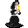

Ambelie¶| Stat | Value |
|---|---|
| Class | humanoid |
| HP | 0 |
| Max AP | 10 |
| Attack cost | 10 |
| Move cost | 10 |
| Damage | 0 |
| Attack chance | 0 |
| Block chance | 0 |
| Damage resistance | 0 |
| Critical skill | 0 |
| Critical multiplier | 0 |
Found on¶
Quests¶
- Immaculate kidnapping: stages 10, 20, 21, 24, 65
- Thieves Hidden (hidden flag): stages 20
Dialogue (31 lines)
What the dialogue says, exactly as in the game files. Lines are listed once; links jump to the line a choice leads to.
ambelie_selector (silent check: the first matching branch below is taken)
- Next (if reached stage 24 of Immaculate kidnapping) → ambelie_guild02_20
- Next (if reached stage 60 of Immaculate kidnapping) → ambelie_guild02_10
- Next (if reached stage 21 of Immaculate kidnapping) → ambelie_guild02_16b
- Next (if reached stage 15 of Immaculate kidnapping) → ambelie_guild02_3
- Next → ambelie_1
ambelie_guild02_20 Ambelie: “You already took my necklace. Leave me alone.”
ambelie_guild02_10 Ambelie: “Bread? That's not a worthy food for a noblewoman like me! Oh my, where am I?”
- “If you prefer going without food in this ugly cell for a long while then I don't care.” → ambelie_guild02_11
- “Do you prefer to eat the floor, bad mannered woman?” → ambelie_guild02_11
ambelie_guild02_16b Ambelie: “You! Don't go any further. Leave me!”
- “I'm not going to hurt you.” → ambelie_guild02_16a
ambelie_guild02_3 Ambelie: “You again?!”
- “[Lie] Sorry, but I have to take you back home!” → ambelie_guild02_4a
- “(Knock her out) Time to sleep!” → ambelie_guild02_4b
ambelie_1 Ambelie: “Oh my, a commoner. Get away from me. I might catch something.”
- “Who are you?” → ambelie_2
- “What is a noble woman such as yourself doing in a place like this?” → ambelie_5
- “I would be glad to get away from a snob like you.” → conversation ends
ambelie_guild02_11 Ambelie: “S..sorry, please ... Yes I'm hungry ... Will you give me that? sniffs”
- “[Give the Bread]” (if hand over 5× Bread) → ambelie_guild02_12
ambelie_guild02_16a Ambelie: “Then get out of my sight now!” — effects: sets stage 21 of Immaculate kidnapping
- “I can't.Things are not that easy! Other people will get you instead of me.” → ambelie_guild02_17a
- “They will probably kill me if I go back without you.” → ambelie_guild02_17b
ambelie_guild02_4a Ambelie: “No! I won't go anywhere with you, commoner! Guards, guards!”
- Next → ff_captain_guild02_4
ambelie_guild02_4b Ambelie: “(You tap her on the back of the head with the handle of your weapon, and she falls unconscious)” — effects: sets stage 20 of Immaculate kidnapping, removes monsters from foaming_flask, spawns monsters on road1, applies condition carrying_ambelie, sets stage 20 of Thieves Hidden (hidden flag)
- “Fine ...” → NPC leaves
ambelie_2 Ambelie: “I am Ambelie of the house of Laumwill in Feygard. I am sure you must have heard of me and my house.”
- “Oh yes ... um ... House of Laumwill in Feygard. Of course.” → ambelie_3
- “I have never heard of you or your house.” → ambelie_4
- “Where is Feygard?” → ambelie_3
ambelie_5 Ambelie: “I, Ambelie, of the house of Laumwill in Feygard, am on an excursion to the southern Nor City.”
- Next → ambelie_6
ambelie_guild02_12 Ambelie: “Th..thanks. Now, please tell me, where am I?” — effects: sets stage 65 of Immaculate kidnapping
- “Sorry, but I cannot reveal that to you right now. Bye.” → conversation ends
- “That doesn't matter! If you behave well maybe you will be out of here sooner rather than later.” → ambelie_guild02_13
ambelie_guild02_17a Ambelie: “I am safe here!”
- “You aren't, and my presence here is the proof!” → ambelie_guild02_18
ambelie_guild02_17b Ambelie: “I couldn't care less about you! Just ask the guards.”
- “Those untrained men aren't able to defend themselves. Don't make me laugh.” → ambelie_guild02_18
- “Other people will get you, and they won't be as kind as me.” → ambelie_guild02_17a
ff_captain_guild02_4 Feygard patrol captain: “Haha! Sorry lady, but your father wants you back home. I also believe this dirty tavern is no place for a woman like you, haha!”
- “Yes, you have to come with me.” → ambelie_guild02_5
ambelie_3 Ambelie: “Feygard, the great city of peace. Surely you must know of it. Northwest in our great land.”
- “What is a noble woman such as yourself doing in a place like this?” → ambelie_5
- “No, I have never heard of it.” → ambelie_4
ambelie_4 Ambelie: “Pfft. That just proves everything I have heard of you savages here in the southern land. So uneducated.”
ambelie_6 Ambelie: “An excursion to see if Nor City really is all that I have heard about it. If it really can compare itself to the glamour of the great city of Feygard.”
- “Nor City, where is that?” → ambelie_7
- “If you like it so much in Feygard, why would you even leave?” → ambelie_9
- “Ehh ... I'm here to ... escort you safely to Nor City.” (if reached stage 4 of Immaculate kidnapping; NOT reached stage 10 of Immaculate kidnapping) → ambelie_guild02_1
ambelie_guild02_13 Ambelie: “... Fine sniffs.”
ambelie_guild02_18 Ambelie: “Stop. Then tell me what I can do!”
- “Give me something of value, and you won't see me again.” → ambelie_guild02_19
- “[Lie]I have enough gold, so if you give me something valuable .... The ransom we were going to ask will be covered.” → ambelie_guild02_19
ambelie_guild02_5 Ambelie: “NO! I've said no! Don't bother me. Get away from me!”
- “Sorry about this (Knock her out).” → ambelie_guild02_4b
- “[Whispering] You fool! Be quiet. Listen to me if you want to save your life.” → ambelie_guild02_4c
ambelie_7 Ambelie: “Don't you know of Nor City? I will take note that the savages here haven't even heard of the city.”
- Next → ambelie_8
ambelie_9 Ambelie: “All the noblewomen in Feygard keep talking about the mysterious Shadow in Nor City. I just have to see it myself.”
- “Nor City, where is that?” → ambelie_7
- “Good luck on your excursion.” → ambelie_10
ambelie_guild02_1 Ambelie: “Why? I don't know you, commoner. Why would I be willing to trust a savage looking kid?”
- “But I'm not a commoner! I'm a ... Feygard spy. These clothes are my disguise!” → ambelie_guild02_2
- “I'm stronger than those smug guards.” → ambelie_guild02_2
ambelie_guild02_19 Ambelie: “Take this and leave me, please.” — effects: gives 1× Sapphire Necklace, sets stage 24 of Immaculate kidnapping, spawns monsters on road1, sets stage 20 of Thieves Hidden (hidden flag)
- “It has been a pleasure, my lady.” → conversation ends
- “Sure, thank you.” → conversation ends
ambelie_guild02_4c Ambelie: “Wha... what are you referring to?”
- “Sorry. Time to sleep! (Knock her out)” → ambelie_guild02_4b
- “I'm here to detain you, and then ask for a ransom.” → ambelie_guild02_15
ambelie_8 Ambelie: “I am beginning to be even more certain that Nor City will never, even in my wildest dreams, be comparable to the great city of Feygard.”
- “Good luck on your excursion.” → ambelie_10
ambelie_10 Ambelie: “Thank you. Now please leave before someone sees me talking to a commoner like you.”
- “Commoner? Are you trying to insult me? Goodbye.” → conversation ends
- “Whatever, you probably wouldn't even survive a forest wasp.” → conversation ends
ambelie_guild02_2 Ambelie: “Anyway, I prefer to stay in this place for now. Get away from me!” — effects: sets stage 10 of Immaculate kidnapping
- “Hmpf .... Goodbye” → conversation ends
ambelie_guild02_15 Ambelie: “No way! Guards!”
- “... Yes, no way. (Knock her out)” → ambelie_guild02_4b
- “I'm not going to hurt you, I don't want to do this.” → ambelie_guild02_16a
Community notes¶
Written by players, not generated from game data. Observations: what players notice in-game · Lore: the in-world story · Trivia: real-world facts, references, development history · Theory / speculation: unconfirmed ideas; may just be unfinished content
Observations¶
Nothing here yet. Know something? Add it.
Lore¶
Nothing here yet. Know something? Add it.
Trivia¶
Nothing here yet. Know something? Add it.
Theory / speculation¶
Nothing here yet. Know something? Add it.
Monster ID: ambelie · Data from v0.8.18